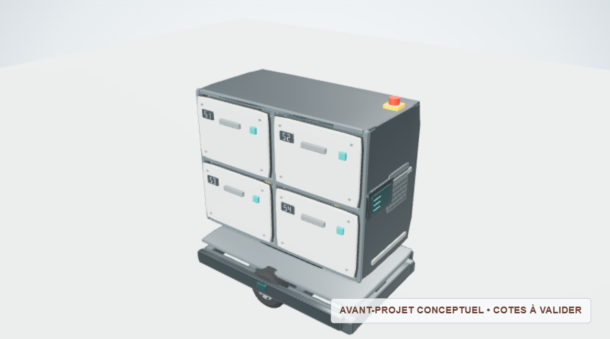
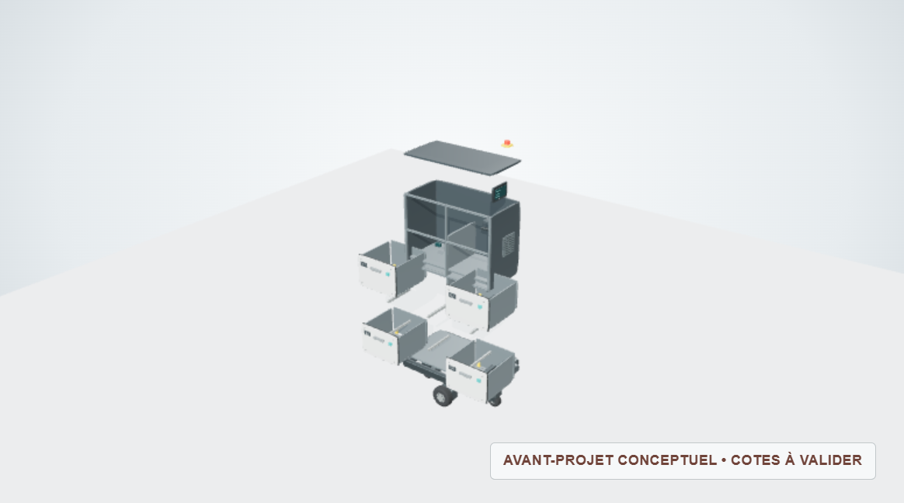
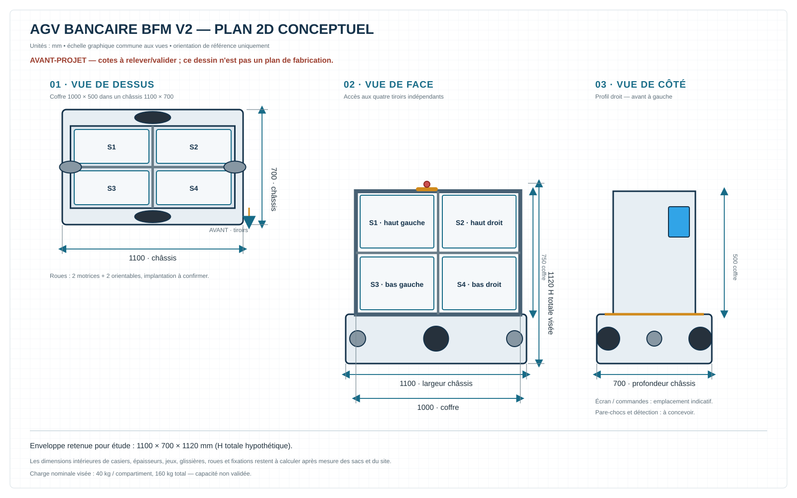
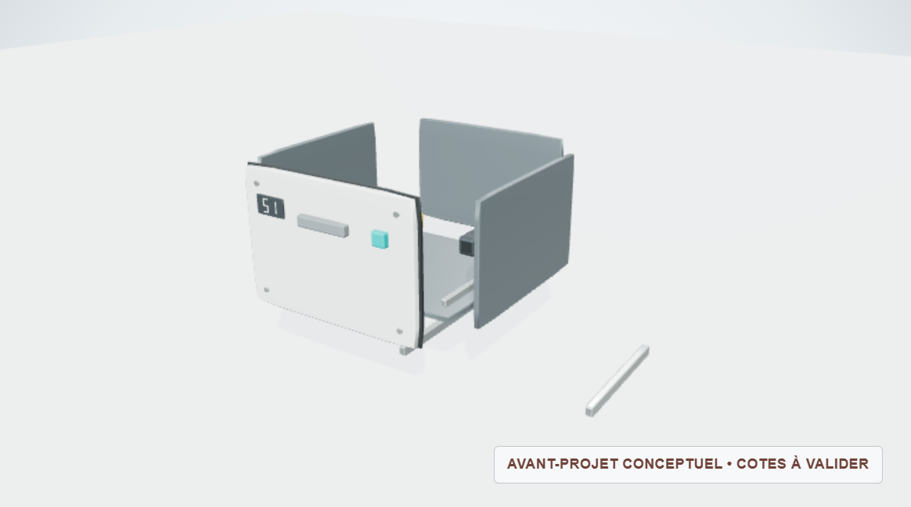

BFM V2 • Dossier visuel de conception
Assemblage général, plans 2D et décomposition des pièces — du détail au robot complet.


Châssis : 1100 × 700 mm
Coffre : 1000 × 500 × 750 mm
Hauteur totale visée : 1120 mm
Disposition 2 × 2 : S1/S2 en haut, S3/S4 en bas.
Charge visée : 40 kg par tiroir, 160 kg total.
Modèle conceptuel à pièces nommées pour visualiser le montage. Mesurer les sacs, les accès et le poste de dépôt avant de figer les plans.
01 • Mise en plan
Les vues de dessus, de face et de côté fixent l'orientation et l'enveloppe actuellement retenues. Les dimensions internes ne sont pas encore des dimensions de fabrication.

02 • Éclaté général
| Rep. | Sous-ensemble | Contenu représenté |
|---|---|---|
| A | Châssis | Longerons, traverses, plateau/supports et pare-chocs. |
| B | Roulement | 2 roues motrices, 2 roulettes orientables, supports et motoréducteurs indicatifs. |
| C | Énergie/commande | Emplacements de batterie, contrôleur, écran et arrêt d'urgence. |
| D | Coffre | Fond, parois, traverses de façade, toit et cloisons. |
| E | Tiroirs S1–S4 | Plateaux, façades, poignées, loquets, butées et fixations figuratives. |
| F | Guidage/action | Glissières et actionneurs représentés à titre d'encombrement. |
robot_agv_eclate.glb dans un logiciel 3D compatible glTF. Les groupes et pièces portent des noms pour faciliter la sélection et le masquage.Le décalage de la vue éclatée est graphique : il ne représente pas les courses réelles d'assemblage ni les jeux mécaniques.
03 • Pièce et module

Fond, joues, dos, façade et cloisons. Épaisseur, matériau, pliage et assemblage à dimensionner.
Glissières, roues, motoréducteurs, actionneurs, verrous et capteurs : références locales à rechercher.
Parallélisme des rails, butées mécaniques, retenue du tiroir, verrouillage détecté et absence de point de pincement.
04 • Ordre d'assemblage
Modèles 3D fournis : modeles/robot_agv.glb (assemblé) et modeles/robot_agv_eclate.glb (éclaté). Les vues PNG et ce PDF sont des illustrations du même avant-projet.